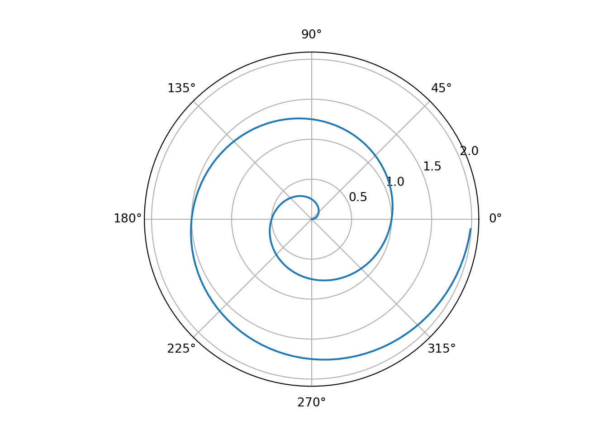
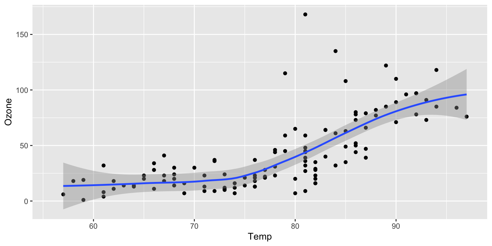

Code
library(reticulate)library(reticulate)For a demonstration of a line plot on a polar axis, see Figure 1.
import numpy as np
import matplotlib.pyplot as plt
r = np.arange(0, 2, 0.01)
theta = 2 * np.pi * r
fig, ax = plt.subplots(
subplot_kw = {'projection': 'polar'}
)<string>:1: MatplotlibDeprecationWarning: The resize_event function was deprecated in Matplotlib 3.6 and will be removed two minor releases later. Use callbacks.process('resize_event', ResizeEvent(...)) instead.ax.plot(theta, r)
ax.set_rticks([0.5, 1, 1.5, 2])
ax.grid(True)
plt.show()
No están usando objetos compartidos en este ejemplo, pero también se podrían hacer como en el ejemplo con R Markdown.
Quarto es muy parecido a R Markdown: Página oficial de Quarto
Figure 2 further explores the impact of temperature on ozone level.
library(ggplot2)
ggplot(airquality, aes(Temp, Ozone)) +
geom_point() +
geom_smooth(method = "loess"
)
Seattle Precipitation by Day (2012 to 2016)
# https://github.com/vega/vega/blob/main/docs/data/seattle-weather.csv
download.file(
url="https://raw.githubusercontent.com/vega/vega/main/docs/data/seattle-weather.csv",
destfile = "seattle-weather.csv")data = FileAttachment("seattle-weather.csv")
.csv({typed: true})
Plot.plot({
width: 800, height: 500, padding: 0,
color: { scheme: "blues", type: "sqrt"},
y: { tickFormat: i => "JFMAMJJASOND"[i] },
marks: [
Plot.cell(data, Plot.group({fill: "mean"}, {
x: d => d.date.getUTCDate(),
y: d => d.date.getUTCMonth(),
fill: "precipitation",
inset: 0.5
}))
]
})